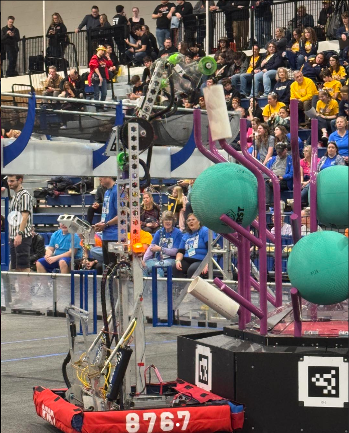
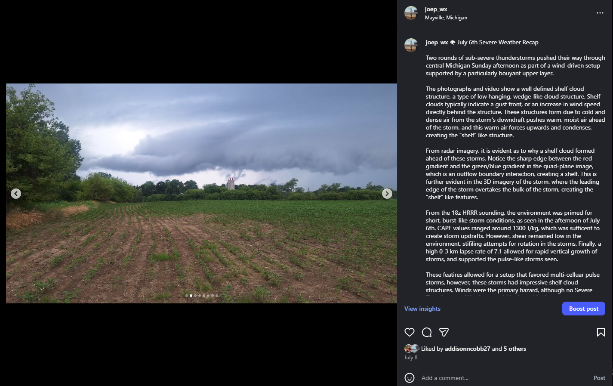
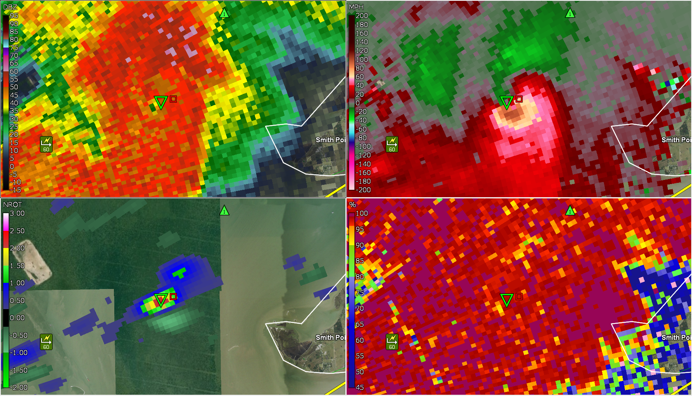

Ongoing FRC Programming: Created programs for competitive robotics systems in the Java programming language, covering important industrial concepts.
Learn MoreOngoing FRC Engineering: Built various prototypes and final design concepts for our robotics team, and worked on construction with a team
 Learn MoreSevere Weather Community Warnings Built warnings on social media platforms (namely snapchat and instagram) to warn members of my community about incoming severe weather events and warnings based on NWS discretion
 Learn MoreLive Radar Visualization: Integrated real-time radar imagery using Leaflet.js and NWS API.
 Learn More